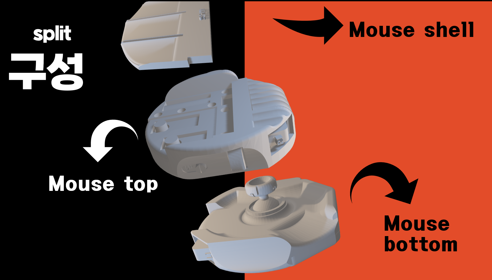
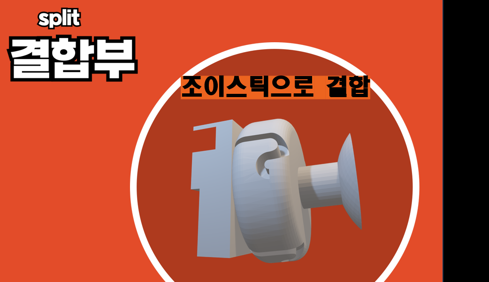
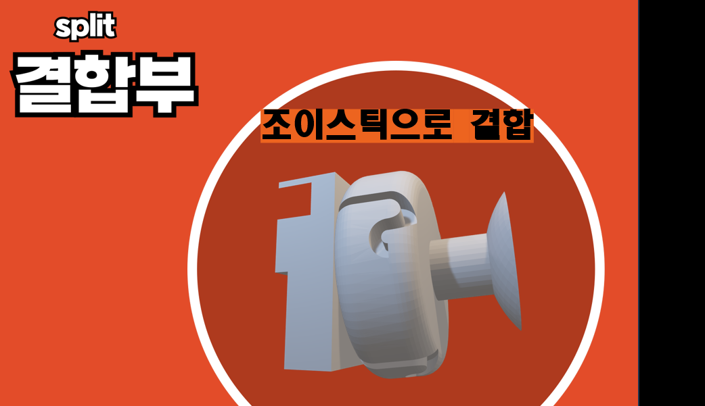
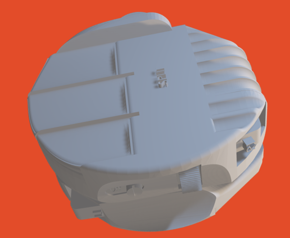
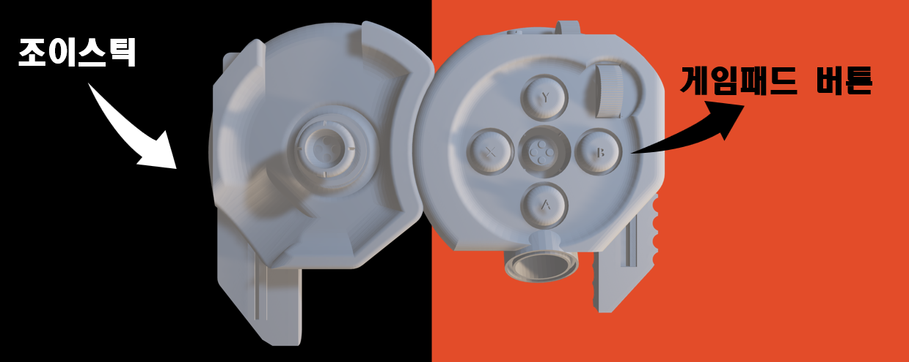
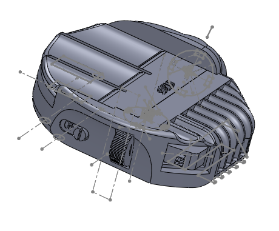
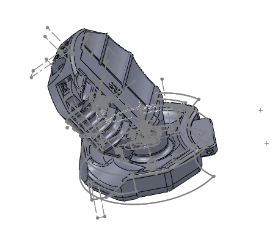
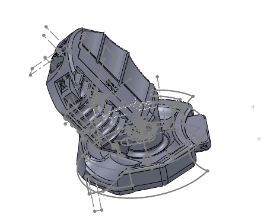

How it works
"SPLIT" is a design of multi-mode mouse.
This mouse has 4 features
1. There are 3 parts consisting the mouse
Each conponents are designed to include PCB boards, batteries and other necessary parts.

2. The push twist mechanism.
a pin which is located next to the mouse's upper part fits to the groove on the lower part, joining the two parts together.
 

3. joy stick is used as a connector
Joy stick is located on the lower part of the mouse. It is used as a connector between upper part and lower part of the mouse.
Groove exists on the side of the joy stick, which makes the pin (on the upper part) fit into it.

4. 3 modes of a mouse
There are 3 modes of this mouse.

Horizontal mode

Vertical mode

Game pad mode
Early sketches using Solidworks

 
